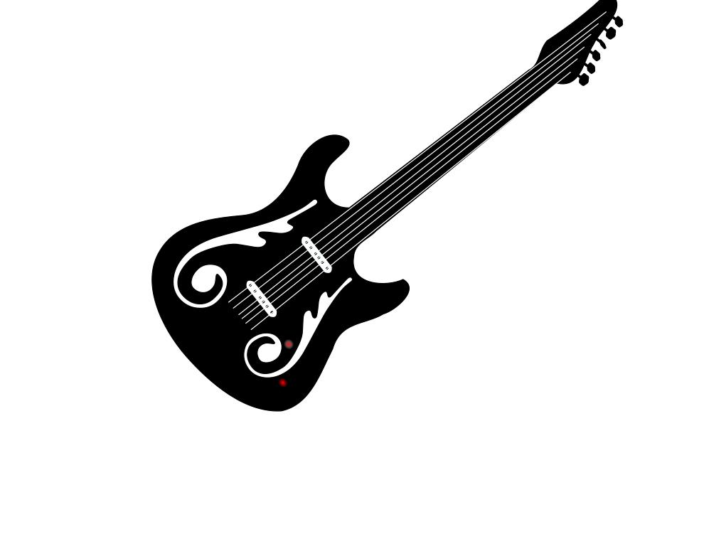
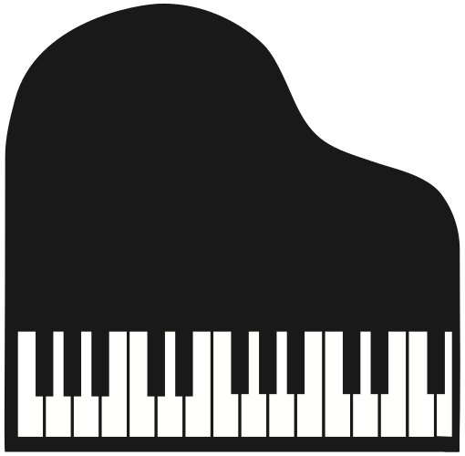

Taller de Lutheria
Pereyra Hnos.
"El corazón del hombre es un instrumento musical, que contiene una música grandiosa, dormida, pero está allí, esperando el momento apropiado para ser interpretada, expresada, cantada, danzada. Y ahi estamos nosotros para acompañarte."
ConocenosCalidad garantizada
- Somos una de las mas antiguas y tradicionales casas de lutheria de la ciudad de Buenos Aires, con mas de 50 años de experiencia.
- Contamos con el trabajo de los mejores profesionales del mundo de la lutheria, premiados y reconocidos alrededor de todo el mundo.
- Trabajamos con materia prima cuidadosamente seleccionada para poder brindarte la mayor calidad y seguridad dentro del mercado de la música.
- Contamos con el respaldo de las principales empresas de instrumentos musicales y de nuestros reconocidos clientes dentro del mundo de la música.
Trabajamos


De y para Musicos
"Comprometidos desde hace mas de 50 años con la música y los músicos, conociendo el detalle de la relación de estos con los instrumentos y dando lo mejor para poder brindarte la mejor experiencia músical de la mano de los mejores especialistas que conocen el trabajo y la vida detrás de cada uno de los instrumentos musicales que llegan a nuestro hermoso taller, acompañado de la mas cálida atención."